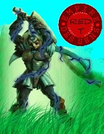

Forums galactiques > Taverne galactique : lieu de discussion informel > IZakaYa - L'alcool encore et toujours...
Pages : 1 2 ... 121 122 123 ... 308 309
| hinu Réputation à la taverne : 101 01/10 ETU 15:19 | Score : 1 Détails Le petit garçon essaya difficilement de sourire.
" Merci." | ||
| Steam Réputation à la taverne : 186  01/10 ETU 15:21 | Score : 0 Détails Voir la reaction de Hinu, son sourire et Steam en afficha un plus grand.
Commencez-vous a comprendre les sentiments? | ||
| Respectalia Réputation à la taverne : 33 01/10 ETU 15:22 | Score : 0 Détails C'est un début, Hinu. Mais puis je vous poser une question : d'ou venez vous ? Quels sont vos origines ?
Et vous m'avez l'air d'être passioné par les sciences ! La voix de Respectalia se faisait douce et tranquille. Elle voulait mieux connaitre ce petit garcon. Comprendre ce qu'exprime notre interiéur demande du temps, Hinu. Et si vous le souhaitez, Steam et moi même pouvons vous aider. | ||
| hinu Réputation à la taverne : 101 01/10 ETU 15:24 | Score : 0 Détails " Je ne sais pas trop, je suis un peu perdu...
Je viens d'une planète étrange pour le mois. Je suis originaire d'un laboratoire, une sorte d'expérience je crois. La science est pour moi une grande chose car elle a pu me donner la vie. Biensur que je voudrais connaitre d'autres sentiments, je crois que je...vous aime...bien.. " Il réssaya un sourire, la tentative fut une parfaite réussite par rapport à la première. | ||
| Respectalia Réputation à la taverne : 33 01/10 ETU 15:29 | Score : 0 Détails C'est normal, vous venez de découvrir de nouveaux sentiments, vous venez de vous faire des amis ... C'est surement un choc pour vous.
Mais ca va aller tout de même ? Sans s'en rendre compte, Respectalia s'etait rapproché d'Hinu, et maintenant, elle le serrait dans ses bras. Pauvre petit être, ne pas ressentir d'émotion, de sentiment ... Elle etait réellement triste pour lui. En découvrant qu'il avait été créé dans un laboratoire, elle ne posa pas plus de question ... Cela devait déjà être un douloureux souvenir. Il est magnfique votre souvenir, Hinu, lança t'elle avec une voix enjoué. | ||
| hinu Réputation à la taverne : 101 01/10 ETU 15:31 | Score : 0 Détails Trouavant bizar d'êtreserré dans les bras, il hésita puis fit de même, sans trop savoir pourquoi.
" Je pense que oui...je ne sais pas trop à vrai dire, je ne suis pas différent ?" | ||
| L'Archange Nathaniel Réputation à la taverne : 131  01/10 ETU 15:31  | Score : 2 Détails L'Archange ne put s'empécher de sourire lorsqu'il vit que Respectalia buvait son coktail et par conséquent , les pillules rouge. Ile leva son verre et porta un toast.
-A tous : CARPE DIEM ! Puis il se raprocha de Steam et s'assit en face d'elle. -Arcrocher donc cette lanterne au desus de nos front. La lumiére vous va si bien au tein. Serveur deux sake. Vous mettrez 2 pillule bleu pour moi (il faut que je déssoule je ne me sens plus Oo) et aportez un daïkiri a hinu. Sous ces allures d'enfant je sens une grande ame. Vous mettrez une dizaine de pillule rouge. | ||
| Respectalia Réputation à la taverne : 33 01/10 ETU 15:33 | Score : 0 Détails La différence est la plus belle chose que nous ait offerte la Nature, Hinu.
C'est un cadeau rare, et sachez qu'il ne faut pas tenter de ressembler à quelqu'un, mais agir selon ce que vous êtes réellement. Vous êtes le petit Hinu, continua t'elle, le fixant attentivement de son regard vert amande intense, et vous devez rester celui-ci, car vous êtes réellement quelqu'un de bien. Elle pressa sa poitrine contre son sa tête, et serra encore plus fort le petit être. Puis, voyant arriver Nathaniel, elle ne put s'empecher de lui demander ... Mais qu'est ce ces pillules, Nathaniel ? Vou avez tenté de me droguer ? | ||
| hinu Réputation à la taverne : 101 01/10 ETU 15:39 | Score : 1 Détails "Merci beaucoup madame.je vous ...remercie ....du fond du coeur...."
Il sourrit, connaissant désormais la joie. | ||
| L'Archange Nathaniel Réputation à la taverne : 131 01/10 ETU 15:40 | Score : 0 Détails L'Archange pris un sourire assez énigmatique.
-Non respectalia. J'ai juste essayer de vous ouvrir les yeux sur une ridicule parti du tantrisme. Ne vous sentez vous pas mieux ainsi ? Et ce n'est pas une drogue car elle n'entraine aucun autre effet de dépendance que le plaisir pur et non altéré par un objet métériel. Quand a toi petit homme , si tu connais désormais la joie c'est parceque tu vivais dans la tristesse. Sinon tu ne pourrais rien differencier sans avoir connu les deux. Avec une seule base de référecement comment ne pas tout identifier a cette base ? alors qu'avec deux on le peux. | ||
| Respectalia Réputation à la taverne : 33 01/10 ETU 15:45 | Score : 3 Détails Ah non, Hinu.
Il y a une régle à savoir en amitié. On ne remercie jamais ses amis. Car c'est cela l'amitié : être présent pour les gens qu'on apprécie, et leur apporter notre aide et notre amour ... Elle se détacha lentement du petit être. Elle se sentait réellement bien, elle avait passé un excellent moment, et trouver un vrai ami en ce lieu. Hinu, vous m'en voyez navré, mais je dois quitter cette Taverne ... D'autre élement m'attende, et je voulais vous dire merci, j'ai passé un bon moment ... Merci a vous aussi, Steam, et quant à vous Nathaniel ... Elle s'approcha de l'Archange, et vint s'asseoir sur ses jambes, et elle enserra sa taille. Elle le regarda d'un air langoureux, et enleva sa chemise ample ... Vous voyez cela, fit-elle en montrant sa poitrine, appuyé contre le torse de l'ange ... Et bien vous ne l'aurez jamais, conclut t'elle avec un sourire en coin ... On ne m'obtient pas avec des pillules ... Elle se retira d'un seul coup, et quitta la Taverne en courant, en jetant un "Je t'adore, Hinu, ne change pas" à la volée ... | ||
| Steam Réputation à la taverne : 186 01/10 ETU 15:48 | Score : 0 Détails Au revoir Respectalia, soyez bénie par les dieux.
Passez une agréable journée. Steam se tourna ver Hinu La joie... Un des plus beaux sentiments qui existent... | ||
| L'Archange Nathaniel Réputation à la taverne : 131 01/10 ETU 15:54 | Score : 0 Détails L'Archange encore stupéfait par l'audace de respectalia était bouche bée
-A la garce...tu sais que je t'aime bien toi ? ^^ Bon eh bien puisque tout le monde s'en vas moi je vais resté ici avec hinu et hoplite histoire de parler tantrisme... | ||
| hinu Réputation à la taverne : 101 01/10 ETU 15:55 | Score : 0 Détails " Au revoir mon amie, portez vous bien.
Je crois que je vais en faire de même. Au revoir Steam mon amie, au revoir archange." Il se leva lentement et déplia sa canne et tatonna jusqu''à la sortie. | ||
| Steam Réputation à la taverne : 186 01/10 ETU 15:56 | Score : 0 Détails A quoi fait référence le terme Tantrisme?
La guerre ou autre chose? | ||
| hopplitte Réputation à la taverne : 31  01/10 ETU 15:58 | Score : 1 Détails Je peux vous le montrer si vous voulez.
| ||
| L'Archange Nathaniel Réputation à la taverne : 131 01/10 ETU 16:01 | Score : 1 Détails L'Archange fut ravi de répondre a la question de Steam.
-Le tantrisme n'a pas de definition particuliére. Elle est differente pour chaque etre. Elle symbolise le chemin a parcourir avant l'arrivé au nirvana. Le tantrisme s'apparente le plupart du temps au plaisir. Même si certain éprouve du plaisir a avoir mal car le plaisir a de nombreuse facette. Pour moi le tantrisme c'est le plaisir de chaque instant. Mes ancetre l'avait baptisé d'épicurien. Alors oui pour certain le tantrisme s'apparente a la guerre et pour d'autre non. Pour vous il est certain que non. Et je pense que hoplitte ne peux vous montrer que sa version du tantrisme : la guerre , la poésie et le sexe semble t'il. Ai-je bien répondu a votre question ? Si vous voulez plus de renseignement seule notre déesse double entité janus-jana pourra vous guider plus que moi. C'est la seule a avoir parcouru le chemin inverse afin de venir guider ses amis. A ses mot hinu se retourna -Oui oui hinu ses amis. Toi aussi si tu décide de parcourir la grande voie tantrique nous seront ravi de te compter parmis nos amis :) | ||
| Steam Réputation à la taverne : 186 01/10 ETU 16:06 | Score : 0 Détails Au revoir Hinu,
Passez une agréable journée Regardant l'archange Je pense que je suivrai le chemin de mon coeur plutot que celui du tantrisme. Peut-etre est-ce la même chose... | ||
| hopplitte Réputation à la taverne : 31 01/10 ETU 16:18 | Score : 0 Détails maintenant que nous sommes seuls voulez vous que je vous fasse vister la planete dont je vous ai parle ?
| ||
| Steam Réputation à la taverne : 186 01/10 ETU 16:18 | Score : 0 Détails Une autre fois...
Je ne me sens pas prete aujourd'hui. Peut-etre la prochaine fois... Sans rancunes? |
Pages : 1 2 ... 121 122 123 ... 308 309
Forums galactiques > Taverne galactique : lieu de discussion informel > IZakaYa - L'alcool encore et toujours...